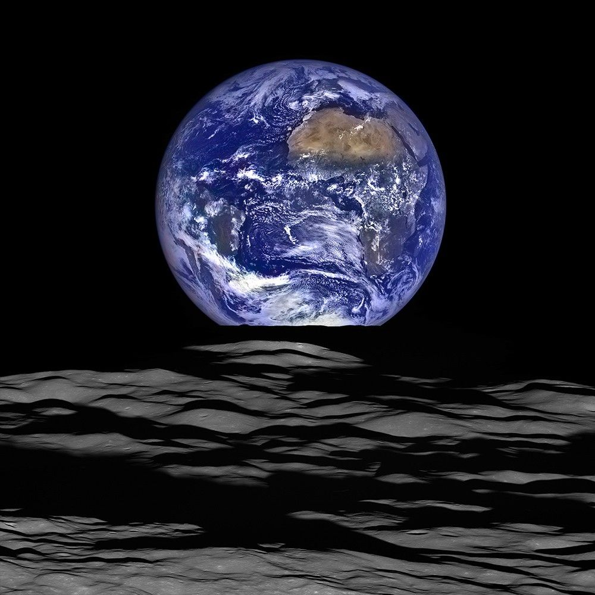

ComunicacionesCommunications
Para hablar por radio directamente con la Tierra, una antena tiene que verla: necesita línea de visión. En el polo sur de la Luna eso no está garantizado. Hay muchos días en que la Tierra queda por debajo del horizonte y ninguna antena de la zona puede verla.To talk to Earth directly by radio, an antenna has to see it: it needs a line of sight. At the Moon’s south pole that is not guaranteed. On many days Earth sits below the horizon and no antenna in the area can see it.

La Tierra se escondeEarth goes into hiding
Desde la Luna, la Tierra casi no se mueve en el cielo: no sale ni se pone como el Sol. Pero se balancea unos 7° hacia arriba y hacia abajo cada mes, un movimiento que se llama libración. En el polo, el horizonte queda justo a la altura de la Tierra, así que durante una parte del mes asoma y durante otra queda por debajo.From the Moon, Earth barely moves in the sky: it does not rise and set like the Sun. But it sways about 7° up and down every month, a motion called libration. At the pole the horizon sits right at Earth’s height, so for part of the month it peeks out and for the rest it stays below.
SeleneSight lo calculó con el relieve real para 18,6 años. En el punto del borde de Shackleton con más luz, la Tierra se ve solo el 49 % del tiempo y hay apagones de hasta casi 15 días seguidos. Tampoco alcanza con poner varias antenas cerca: el mejor par de antenas a menos de 25 km llega al 56 %, con apagones de casi 13 días. Cuando la Tierra baja del horizonte, baja para toda la zona a la vez.SeleneSight computed it with the real terrain over 18.6 years. At the sunniest point on the rim of Shackleton, Earth is in view only 49% of the time, with blackouts of up to almost 15 days in a row. Putting several antennas nearby does not solve it either: the best pair of antennas within 25 km reaches 56%, with blackouts of almost 13 days. When Earth drops below the horizon, it drops for the whole area at once.
Hay una excepción. En la cresta del macizo Malapert, a unos 86° Sur y cerca de 0° de longitud, el terreno alto mira hacia la cara de la Luna que da a la Tierra. Ahí SeleneSight encontró lugares que no pierden la Tierra de vista ni una hora en 18,6 años. El problema es que están a unos 130 km de Shackleton, y a esa distancia la curvatura de la Luna esconde casi 5 km de altura: no hay vista directa entre los dos lugares.There is one exception. On the crest of Malapert Massif, at about 86° South and close to 0° longitude, high ground faces the side of the Moon that points to Earth. There SeleneSight found places that do not lose sight of Earth for a single hour in 18.6 years. The problem is that they are about 130 km from Shackleton, and at that distance the Moon’s curvature hides almost 5 km of height: the two places cannot see each other.
Alternativa 1: repetidoras en la superficieOption 1: repeaters on the surface
Es la misma idea que las antenas de televisión o de telefonía en lo alto de un cerro, que unen valles que no se ven entre sí. La señal sale de la base, pasa por una antena repetidora en una cresta intermedia y llega a dos antenas en Malapert, que siempre ven la Tierra. SeleneSight encontró repetidoras que ven a la vez la base de Shackleton y Malapert. Con mástiles de 10 m el margen sobre el relieve queda muy justo; con mástiles de 30 m hay al menos dos caminos seguros, con repetidoras a unos 16 y 22 km de la base. El modo “Red de comunicaciones” de la app hace este cálculo para cualquier base.It is the same idea as TV or phone antennas on a hilltop, linking valleys that cannot see each other. The signal leaves the base, goes through a repeater antenna on an intermediate ridge and reaches two antennas on Malapert, which always see Earth. SeleneSight found repeaters that see both the Shackleton base and Malapert. With 10 m masts the clearance above the terrain is very tight; with 30 m masts there are at least two safe paths, with repeaters about 16 and 22 km from the base. The app’s “Communications network” mode runs this calculation for any base.
A favor: no depende de lanzar nada más y se puede reparar en el lugar. En contra: cada repetidora necesita su propia energía y mantenimiento, y si una falla se corta el enlace. Por eso conviene tener dos caminos distintos y dos antenas en Malapert, una de respaldo de la otra.For: it does not depend on launching anything else and it can be repaired on site. Against: each repeater needs its own power and upkeep, and if one fails the link is cut. That is why two different paths and two antennas on Malapert, one backing up the other, are a good idea.
Alternativa 2: satélites de retransmisiónOption 2: relay satellites
Un satélite que gira alrededor de la Luna puede ver al mismo tiempo la base y la Tierra, y pasar los mensajes de una a otra. Para que sirva en el polo sur, sus órbitas se eligen para que pase mucho tiempo encima de esa zona, y con varios satélites siempre hay alguno a la vista.A satellite circling the Moon can see the base and Earth at the same time and pass messages between them. To be useful at the south pole, its orbit is chosen so that it spends a long time above that area, and with several satellites there is always one in view.
La Agencia Espacial Europea (ESA) está construyendo una red así, llamada Moonlight. Tendrá cinco satélites: uno para comunicaciones con mucha capacidad de datos y cuatro para navegación, una especie de GPS lunar. Estarán ubicados para dar prioridad al polo sur y se conectarán con la Tierra a través de tres estaciones terrenas. El primer paso es Lunar Pathfinder, un satélite de retransmisión que empieza a operar en 2026. La ESA prevé los primeros servicios de Moonlight para fines de 2028 y el funcionamiento completo para 2030.The European Space Agency (ESA) is building such a network, called Moonlight. It will have five satellites: one for high-capacity communications and four for navigation, a kind of lunar GPS. They will be placed to give priority to the south pole and will connect to Earth through three ground stations. The first step is Lunar Pathfinder, a relay satellite that starts operating in 2026. ESA expects Moonlight’s first services by the end of 2028 and full operation by 2030.
La ESA trabaja con la NASA y con la agencia espacial de Japón (JAXA) en LunaNet, un conjunto de reglas comunes para que las misiones de distintos países puedan usar las mismas redes de comunicación y navegación en la Luna.ESA is working with NASA and Japan’s space agency (JAXA) on LunaNet, a set of shared rules so that missions from different countries can use the same communication and navigation networks on the Moon.
Una ideaOne idea
Usar los satélites como enlace principal, porque cubren toda la zona sin depender del relieve, y mantener la cadena de repetidoras hasta Malapert como respaldo independiente: si un satélite falla, sigue habiendo comunicación directa con la Tierra. Además, los equipos pueden guardar los datos durante un corte y enviarlos cuando vuelve el enlace. En los dos caminos manda lo mismo: la línea de visión, la idea que da nombre a SeleneSight.Use the satellites as the main link, since they cover the whole area without depending on terrain, and keep the chain of repeaters to Malapert as an independent backup: if a satellite fails, there is still direct communication with Earth. Equipment can also store data during an outage and send it when the link returns. Both paths depend on the same thing: line of sight, the idea that gives SeleneSight its name.
FuentesSources
Probar la red de comunicaciones en SeleneSightTry the communications network in SeleneSight